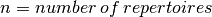

In-depth Tutorial¶
This tutorial summarizes how immuneREF may be used to analyze a set of four simulated immune repertoires.
- Overview
- The workflow of the quickstart analysis
- 1. Input format
- 2. Analysis of single features
- 3. Similarity score calculation
- 4. Condensing layers into multi-layer network
- 5. Visualization of results
- 6. Flowchart immuneREF workflow
Overview¶
ImmuneREF allows the analysis of repertoire similarity on a one-to-one, one-to-many and many-to-many scale across repertoire features ranging from fully sequence- to fully frequency-dependent ones. For information on package availability and installation refer to Installing immuneREF.
The immuneREF workflow combines the analysis of a range of features to calculate a multidimensional similarity network of immune repertoires.
The workflow of the quickstart analysis¶
The immuneREF repertoire analysis workflow consists of the following steps:
- Preparation: Ensuring correct format of input repertoires.
- Analysis of six immune repertoire features for each repertoire.
- Similarity score calculation for each repertoire pair and feature.
- Condensing resulting similarity layers into a multi-layer network.
- Analysis of similarity dimensions.
In the immuneREF_tutorial.R, we provide a step by step example of a standard immuneREF analysis.
1. Input format¶
immuneREF requires your data to be in an R data.frame format with AIRR-standard [1] column names:
- “sequence_aa”: Full amino acid VDJ sequence
- “sequence”: Full nucleotide VDJ sequence
- “junction_aa”: amino acid CDR3 sequence
- “junction”: nucleotide CDR3 sequence
- “freqs”: occurrence of each sequence in sequencing (column has to sum up to 1)
- “v_call”: V-gene annotation (IMGT format, compare naming to provided
list_germline_genes) - “d_call”: D-gene annotation (IMGT format, compare naming to provided
list_germline_genes) - “j_call”: J-gene annotation (IMGT format, compare naming to provided
list_germline_genes)
To test the compatibility of the input format, we provide the compatibility_check() function which checks for potential compatibility issues
and notifies the user where adjustments might be necessary. Note that this function only provides insight into potential compatibility and does not necessarily indicate that the analysis will fail.
compatibility_check(repertoire=tutorial_repertoires[[1]], species="mm", receptor="igh")
2. Analysis of single features¶
A. Setting up of reference dataframe.¶
First, we set up a reference dataframe that contains meta-information for each repertoire that is to be analyzed. This dataframe will summarize the datasets and serves as a reference for the analysis of isolated categories downstream.
#Set working directory
setwd(PATH)
# Load datasets (check for compatibility,
# Compatible repertoires have:
# 1) AIRR standard column naming.
# 2) VJ naming compatible with the included list_germline_genes dataset.
# 3) Clonal frequencies that sum up to 1.
list_simulated_repertoires <- tutorial_repertoires
# Set number of repertoires to be analyzed and names for reference dataframe
repertoire_names <- names(list_simulated_repertoires)
repertoire_lengths <- sapply(list_simulated_repertoires,nrow)
repertoire_species <- sapply(strsplit(repertoire_names, "\\_"),function(x) x[[1]])
repertoire_receptor <- sapply(strsplit(repertoire_names, "\\_"),function(x) x[[2]])
repertoire_chain <- sapply(strsplit(repertoire_names, "\\_"),function(x) x[[3]])
# Create dataframe containing all relevant metadata on repertoires
input_data_ref<-data.frame(sample_id = repertoire_names,
nb_sequences = repertoire_lengths,
species = repertoire_species,
receptor = repertoire_receptor,
chain = repertoire_chain,row.names=c(1:length(repertoire_names)))
B. Calculate repertoire overlap¶
To determine the “Convergence” feature layer, we calculate the repertoire overlap of the full repertoires. In the standard immuneREF workflow,
a simple 100% CDR3 amino acid match is used basis = "CDR3_aa". However, the user is free to change the parameter basis to:
- CDR3_nt (100% CDR3 nucleotide match)
- VDJ_aa (100% amino acid match of full VDJ sequence),
- VDJ_nt (100% nucleotide sequence match of full VDJ sequence),
- V_CDR3_J_aa (100% CDR3 amino acid sequence match and same v_call and j_call)
- V_CDR3_J_nt (100% CDR3 nucleotide match and same v_call and j_call)
# Calculate overlap layer on full datasets for Convergence layer
overlap_layer<-repertoire_overlap(list_simulated_repertoires,basis="CDR3_aa")
The resulting overlap_layer is a symmetrical matrix, where . Each entry represents the overlap
between a repertoire pair. For this layer, the user is free to choose other overlap measures (e.g., Morisita Horn) as long as the
result is a nxn matrix with similarity scores in the range [0,1].
C. Subsampling of repertoires¶
Since multiple immuneREF steps contain computationally intensive calculations, users are encouraged to subsample them to a user-defined
subsample_size (at least for the calculation of the Architecture and k-mer occurrence layers). A repertoire size of 10‘000 sequences is suggested.
Subsampling may be performed in one of two ways:
- Picking the x top clones (
random = FALSE) - Randomly (x random rows are chosen for the analysis) (
random = TRUE)
# Subsample for the ones that are not 10000
subsample_size<-10000
list_simulated_repertoires<-subset_input_repertoires(list_repertoires=list_simulated_repertoires,
subset_size=subsample_size,
random=FALSE)
D. Calculation of the remaining 5 features¶
The prepared list of repertoires is analyzed using the calc_characteristics() function
and returns a list containing the extracted features for each layer.
# Calculate all features for each repertoire
repertoires_analyzed<-list()
for(i in 1:length(list_simulated_repertoires)){
repertoires_analyzed[[repertoire_names[i]]]<-calc_characteristics(
repertoire_df=list_simulated_repertoires[[i]],
species=repertoire_species[i],
receptor=repertoire_receptor[i],
chain=repertoire_chain[i],
identifier_rep=repertoire_names[i])
}
Parallelization: For a larger number of repertoires, it is suggested to parallelize this step. Parallelization may for example be achieved using the R packages foreach, doMC as shown in the code example below.
library(foreach)
library(doMC)
registerDoMC(10) #register multicore backend
# Calculate all features for each repertoire in parallel
repertoires_analyzed<-foreach(i=1:length(list_simulated_repertoires)) %dopar% {#
repertoires_analyzed_loop<-calc_characteristics(
repertoire_df=list_simulated_repertoires[[i]],
species=repertoire_species[i],
receptor=repertoire_receptor[i],
chain=repertoire_chain[i],
identifier_rep=repertoire_names[i])
return(repertoires_analyzed_loop)
}
names(repertoires_analyzed)<-repertoire_names
3. Similarity score calculation¶
Having analyzed the repertoire features, the similarity scores may be calculated for each layer. This is done using the calculate_similarities() function for all layers
except the overlap_layer which is already in a similarity matrix format. Further details on the similarity calculation are given in a dedicated chapter (See: Determining repertoire similarities).
The required input is:
- repertoires_analyzed: The output of the previous section
- vdj_vj_weights: For the germline usage similarity calculation the user can choose which gene usage information to take into account: c(V, D, J, VJ). Default is set to V and J usage (i.e., c(1,0,1,0))
- convergence: Here the user can choose, between overlap (default) and immunosignature layer.
- overlap_layer: In case overlap is used as a convergence measure, the calculated overlap layer is introduced here
- cor_methods: A named vector of length six containing information on which correlation measure should be used (Default: Pearson for all layers)
#Calculate similarities between repertoire for each layer
list_single_layers<-calculate_similarities(repertoires_analyzed,overlap_layer)
This step can again be parallelized using the calculate_similarities_parallel() function:
#Calculate similarities in parallel per layer.
list_single_layers<-calculate_similarities_parallel(repertoires_analyzed,overlap_layer)
4. Condensing layers into multi-layer network¶
After having calculated the similarity relationships between repertoires for each layer, the layers may be combined into a multi-layer network by condensing layers.
The default method (standard) takes a weighted mean of the similarity scores for each repertoire pair (future versions will include additional methods).
The layer weights are determined by the user via the weights parameter. (See also: Multi-layer analysis)
#Calculate condensed network (here equal weights for each layer)
cormat <- condense_layers(list_single_layers,
weights = c(1,1,1,1,1,1),
method = "standard")
5. Visualization of results¶
The resulting immuneREF layers can be analyzed using various tools provided in the package and described in the manuscript. These include:
- Drawing clustered heatmaps for each layer and the condensed network
- Determine network features of similarity layers
- Analyze global similarity score distribution (many-to-many)
- Identify most and least similar repertoires per category via local similarity
- Six-dimensional many-to-one comparison of repertoires to reference repertoires.
- Classical repertoire analysis of repertoires based on the analysis in the repertoire feature extraction (D. Calculation of the remaining 5 features).
A detailed overview of the output produced by the tutorial code below is found at Analysis of immuneREF output
###
# Draw heatmap of immuneREF layers
###
# Make list of all layers you want to plot heatmaps for
list_all_layers <- list_single_layers
list_all_layers[["Condensed"]] <- cormat
# Prepare list with heatmap annotations containing categories and colors
annotation_list<-list()
annotation_list[["categories"]]<-data.frame(Species=input_data_ref$species,
Receptor = input_data_ref$receptor)
annotation_list[["colors"]]<-list(Species=c(mm='#ffffbf',hs='#fc8d59'),
Receptor=c(ig='#91bfdb'))
# For each entry (immuneREF layer) plot a heatmap
print_heatmap_sims(list_similarity_matrices=list_all_layers,
annotation_list=annotation_list,
path_figure="figures")
## Bonus: calculate network features of condensed immuneREF layer
network_features <- analyze_similarity_network(cormat)
###
# Draw Global Similarity Plots of immuneREF layers
###
# Define relevant subsets for splits
categories_list<-list()
categories_list[["categories"]]<-input_data_ref
categories_list[["color"]]<-c("white",'#91bfdb','#ffffbf')
categories_list[["subset"]]<-"species"
#Plot global similarity
print_global_similarity(list_similarity_matrices=list_all_layers,
categories_list = categories_list,
path_figure="figures")
###
# Plot local similarity per category and identify max and min locally similar repertoires
##
max_min_reps<-print_local_similarity(list_similarity_matrices=list_all_layers,
categories_list = categories_list,
path_figure="figures")
###
# Radar plot to visualize similarity across all 6 layers
##
radar_list<-list()
radar_list[["mm_ig_h_2_0__0_0_0_A"]]<-repertoires_analyzed[["mm_ig_h_2_0__0_0_0_A"]]
radar_list[["mm_ig_h_4_0__0_0_0_A"]]<-repertoires_analyzed[["mm_ig_h_4_0__0_0_0_A"]]
radar_list[["hs_ig_h_2_0__0_0_0_A"]]<-repertoires_analyzed[["hs_ig_h_2_0__0_0_0_A"]]
radar_list[["hs_ig_h_4_0__0_0_0_A"]]<-repertoires_analyzed[["hs_ig_h_4_0__0_0_0_A"]]
comparison_list<-list(roi=names(radar_list),
roi_names=c(
"Murine A",
"Murine B",
"Human A",
"Human B"),
ref="mm_ig_h_2_0__0_0_0_A",
plot_names=c("Murine A", "Murine B","Human A","Human B"),
colors=c("grey","blue",'red',"green"))
print_repertoire_radar(list_similarity_matrices=list_single_layers,
to_compare=comparison_list,
path_figure="figures",
name_plot="tutorial")
####
# Classical repertoire analysis of maximally and minimally similar repertoires per category
####
# Print classic repertoires comparing max and min locally similar plots for:
# Simulated murine igh repertoires
mm_igh<-list()
#add max locally similar repertoire
mm_igh[["mm_ig_h_2_0__0_0_0_A"]]<-repertoires_analyzed[["mm_ig_h_2_0__0_0_0_A"]]
#add min locally similar repertoire
mm_igh[["mm_ig_h_4_0__0_0_0_A"]]<-repertoires_analyzed[["mm_ig_h_4_0__0_0_0_A"]]
print_repertoire_comparison(list_repertoires=mm_igh,name_plots="mm_igh",aa_freq_length=14,path_figure="figures")
# Simulated human igh repertoires
hs_igh<-list()
#add max locally similar repertoire
hs_igh[["hs_ig_h_2_0__0_0_0_A"]]<-repertoires_analyzed[["hs_ig_h_2_0__0_0_0_A"]]
#add min locally similar repertoire
hs_igh[["hs_ig_h_4_0__0_0_0_A"]]<-repertoires_analyzed[["hs_ig_h_4_0__0_0_0_A"]]
print_repertoire_comparison(list_repertoires=hs_igh,
name_plots="hs_igh",
aa_freq_length=17,
path_figure="figures")
References¶
| [1] | AIRR Community Standardized Representations for Annotated Immune Repertoires. Vander Heiden JA et al., Front Immunol (2018), doi: 10.3389/fimmu.2018.02206, https://github.com/airr-community/airr-standards |